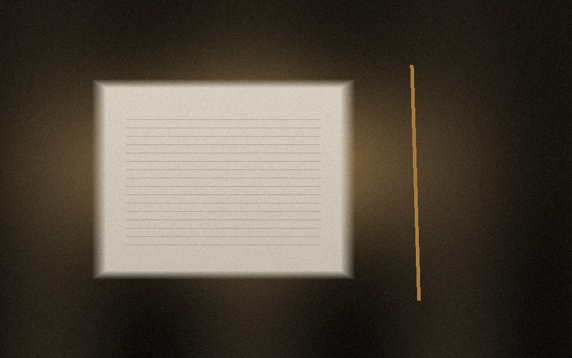
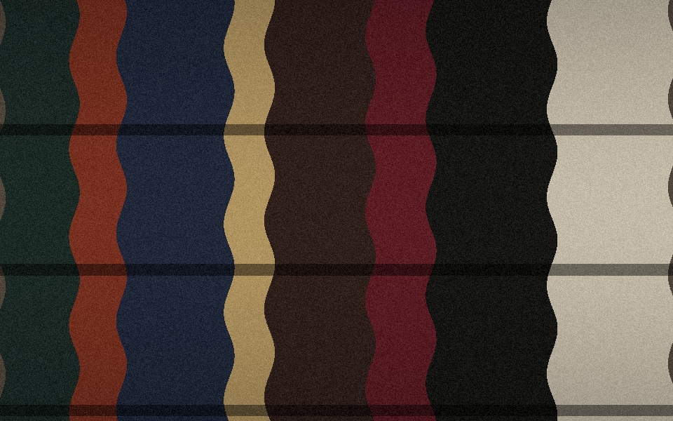

Worth a look18 min

Sebastian Raschka's from-scratch course on reasoning models
A from-scratch video build of a reasoning model — the rare course that shows the machinery instead of a wrapper call.
·
Worth a look18 min

A from-scratch video build of a reasoning model — the rare course that shows the machinery instead of a wrapper call.
·
Hot6 min

A shop in Lisbon is taking commissions again. The constraint is the point: one face, one size, no reprints.
·
Rabbit hole3 Oct
A short paper on persistence. Worth it if you are still thinking about state that outlives the prompt.
·